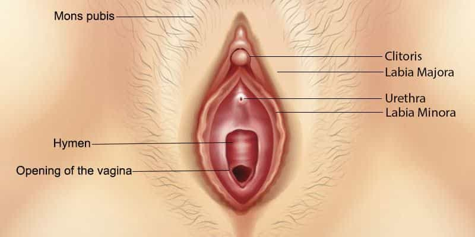
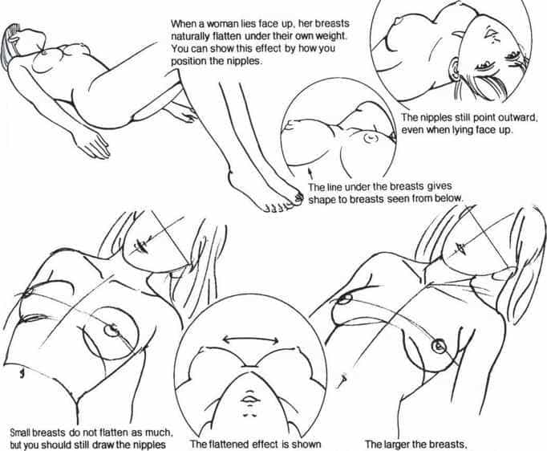

In Napolean Hill’s Think and Grow Rich, the idea is presented that sex is the main driving force behind everything we do as men. You may or may not agree with this idea, but without a doubt, sex is on the top of most of our priority lists as men. And women know this. Knowing the power of the vagina, they can try and use it as a tool to control us if we’re not aware of the fact.
However, something that is of vital importance, is that when sex does arise, you can at least handle your part of the job. I’m not talking about a one-night stand with a whatever chick you won’t be calling again. I’m talking about a girl that you want a relationship with, or at least a continued sexual relationship with.
Make her orgasm, and you can be confident that at least that part is covered. Give her strong enough, and consistent enough, orgasms, and she’ll be coming back to you, if that’s what you want (as long as you don’t fuck it up too bad in other areas).
However, don’t make her orgasm – or have no idea how to – and you’ll be operating out of a position of weakness. Besides the lack of physical satisfaction and building up of frustration from not having orgasms (and resulting bitchiness), she may also begin to look at you like a man who can’t finish the job.
This is not a problem if you’re able to maintain an ultimate sense of not giving a shit. But most of us care at least to some degree if she’s not getting off during sex regularly.
With estimates of as high as 75% of women not having orgasms during regular intercourse, and most requiring oral or manual stimulation to get off (and even in that case, as high as 15% saying they never get off), this is an area that many men are obviously striking out at, and where you can gain an advantage, both in the dating world and in your relationship.
Follow these basic guideline and sooner or later you’ll be getting any woman you want off (unless she has some issues with her sexual anatomy), at least with a bit of practice:
1. Foreplay

Boring for some, but it will get her engine hot and make your job much easier when you do start penetrating. Foreplay isn’t brain surgery. Stimulate her nipples, ass, vagina, clit, neck, ears, lips orally and manually, and try circling around them to build up arousal, teasing, before finally giving in and zeroing in on her “hot ends”. She’ll go nuts in no time. Keep your cool.
2. Clitoris is key

When I first started out having sex, I would bang as hard as I could for as long as I could (which wasn’t very long back then), slapping ass, talking dirty, etc, like I had seen in porn. I thought that was what it was all about. Sure, this is important, but that one little button is what’s really responsible for her orgasm. Some even go as far as to say the G-Spot is the internal portion of her clitoral cluster, so even g-spot orgasms come from this “control center”.
3. Learn how to stimulate the clit
With your tongue, repeating what makes her react (don’t switch up strokes like an idiot. Imagine a girl trying to do the letters of the alphabet on your dick when giving head; you’ll never get off). During intercourse, try and rub hard into the clit on the in- and out-stroke during penetration.
4. Pay attention to her erogenous zones during intercourse

Even if it takes some contortion, sucking on a nipple, fingering around her ass, or pulling on her ponytail, all the while talking dirty, are like pressing fast-forward towards her orgasm.
5. Keep in mind, all this may also press fast-forward on your own process
Holding back from busting your shot may seem difficult when all this increasing of her arousal is going on. Solo ejaculation control exercises and learning how to keep an erection after orgasm by clamping down hard with a timed PC are two physical methods you can learn to extend your performance.
Vitamin B12 and winter savory are said to possibly have ejaculation control properties. If it’s bad enough, popping a prescription paroxetine (SSRI antidepressant) on demand can help delay ejaculation, without regularly having to take meds.
This is worth learning how to at least get this down, so you can maintain the upper hand when in the bedroom.
Mastering the female orgasm
In the early days of my sex life, I was dating a Colombian Dominican goddess. She was a freaky little thing with some amazing ass and thighs, super thin waist; dark curly hair and eyes. I was in love and so was she. We had that fresh, young, overpowering kind of love. Physically, she was like my drug, and she wanted to get me off all the time, and did some over and beyond things like jerking me off in restaurants out of the blue, giving head while driving, etc.
But besides that, we got along amazingly. We had a matching sense of humor and sarcasm, and a similar way of looking at life. But there was just one issue: I couldn’t make her orgasm.
Like mentioned, I thought I just had to “bang” her a little harder, for longer, talk dirtier. I paid zero attention to her clit, barely knowing what it was there for. Each time after sex, no matter how hard I tried, I’d ask her if she orgasmed, and while she’d try and comfort me, it would always lead to the truth. “No.”
My stress of not being able to make her orgasm made me stranger, more nervous, needier. I became obsessed with wanting to get her off during sex. This took away everything that made me attractive to her. I overcompensated with my “personality” and activities with her, making me seem so “forced”. Our relationship soon become something strained, before falling apart altogether.
Years later she called me out of the blue. After some small talk, the conversation turned to what went had gone wrong with us. Without much hesitation, she said everything was good about our relationship, but the sex is what caused the split.
Her enjoyment with sex is important
Immediately after she had left me, I was in a depressed, yet anxiously obsessed state where I had to learn as much as I could about the female orgasm in order to not let this BS happen again. I learned, and learned and learned, but still, deep down something in me said it wouldn’t work.
After some time I was able to get back on my feet, and through the right mix of events, the next major one came along. Colombian Cuban mix. Bigger ass, bigger tits, thin waist as well, not as pretty. But fuck it. When it came to the sex, it felt like I was walking into game 7 of the finals. So much was riding on this.
I put my techniques to work, warmed her up, paid attention to the clit, rubbed hard on the in- and out-stroke, and low and behold, her pussy tightened up, legs wrapped around me tightly, and she began vibrating and breathing quickly and shallowly through the nose, and then release. I still had some stamina in me, kept going, and was able to repeat the process.
I got her off twice. One of the greatest barriers in my life ever, one of the biggest lies I had been telling myself, broken. Surpassed. Six months in I felt like I was rightfully the most eligible bachelor in Miami and wanted to roam guilt-free, so dumped her, but at least it was me in control.
Since then, I’ve had many women come in and out of my bed, and since following these same rules, I’ve been consistently getting them off.
I’ve had women fake pregnancies and send in order to keep me in the picture (crazy), women go from seeing me just as a friend, to becoming obsessive/possessive once they gave me a shot in bed, women wanting to get married. The opposite of the “fleeing effect” not giving a woman an orgasm had.
Learn how to make a woman orgasm, and practice, and you’ll at least have that corner of your life taken care off. Then you can concentrate on improving in all the other areas.
Read More: The Awesome Temporary Power Of Young Attractive Women